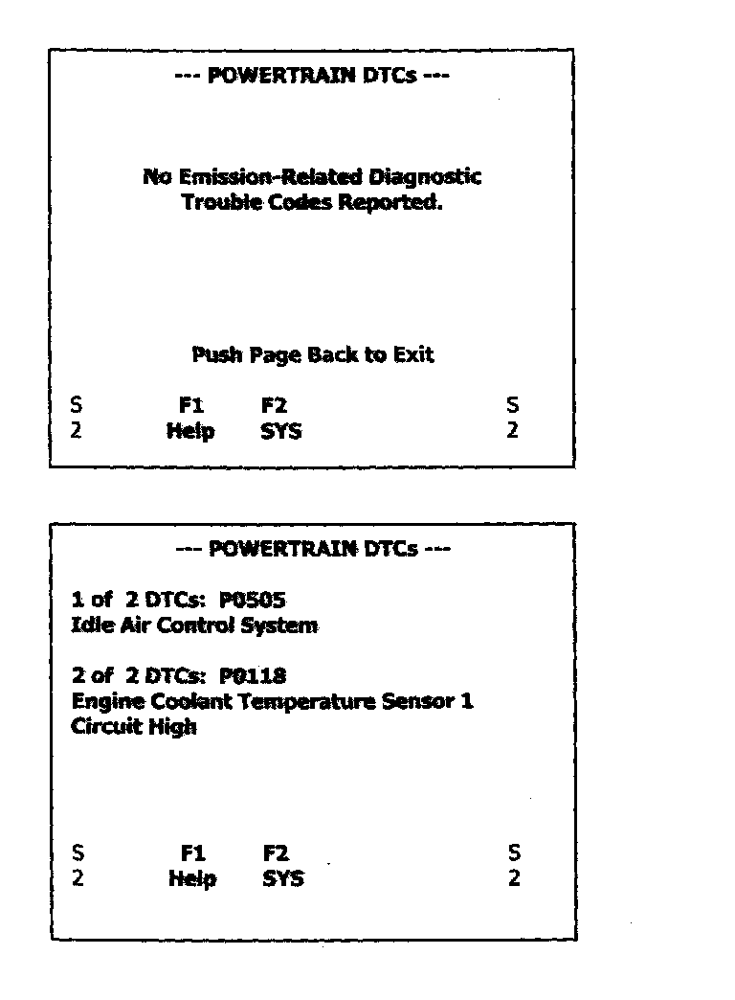

3. Emission Related DTCs

MODE 3 - Request Emission-Related Powertrain Diagnostic Trouble Codes
Functional Description - The purpose of this mode is to obtain stored emission-related powertrain diagnostic trouble codes (DTCs). If a module capable of storing powertrain codes does not have stored codes then that module shall respond with a message indicating zero codes are stored.
NOTE5:
When a manufacturer-specific DTC (P1000 family) is encountered the message "No text available for DTC code" will be displayed.